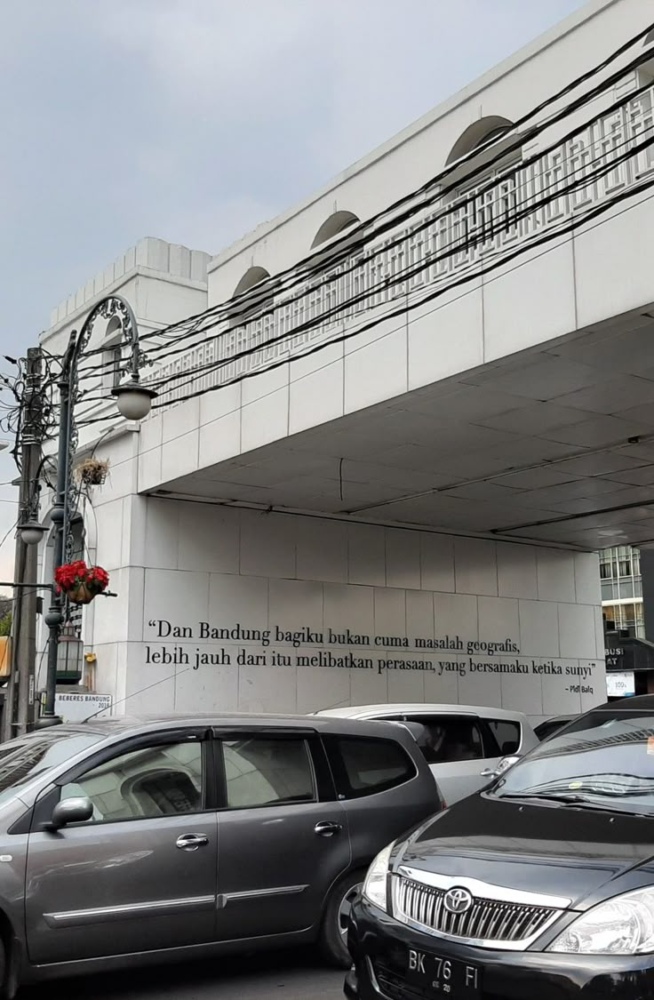
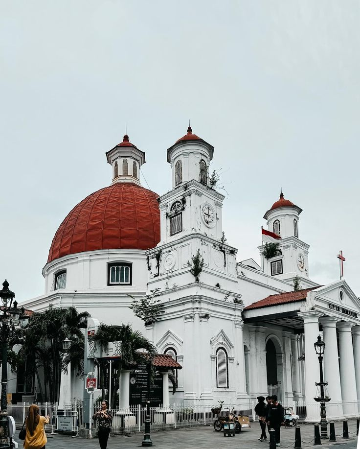

Yogyakarta
Yogyakarta merupakan kota budaya dan pariwisata dengan destinasi wisata terkenal seperti Keraton Yogyakarta, Malioboro, Taman Sari, dan lain sebagainya.
Tidak hanya disebut sebagai kota budaya, Yogyakarta dikenal dengan sebutan kota pelajar dengan banyak sekali perguruan tinggi di kota ini.

Bandung
Bandung adalah sebuah kota sekaligus ibukota provinsi di Jawa Barat. Dahulu, Kota Bandung dijuluki sebagai Paris van Java karena mirip seperti Kota Paris di Prancis
Kota Bandung juga dikenal dengan sejumlah besar bangunan lama berarsitektur peninggalan Belanda seperti Geung Sate dan Gedung Pakuan
Semarang
Kota Semarang adalah salah satu kota yang terletak di pesisir utara Jawa dengan kondisi topografi yang unik berupa wilayah dataran rendah yang sempit dan wilayah perbukitan yang memanjang dari sisi barat hingga sisi timur Kota Semarang.
Pariwisata menjadi salah satu pendukung perekonomian kota Semarang. Bangunan lama peninggalan masa penjajahan Belanda, terdapat di beberapa sudut kota.
